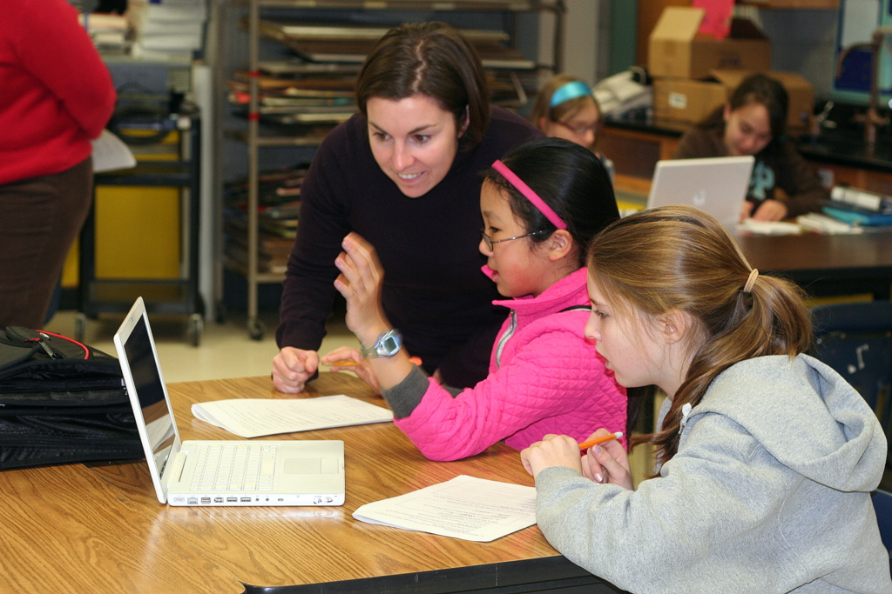

In spring 2010, 6th grade science teacher Michelle Bartley integrated WWT tour-making into a six-week Astronomy unit with her students. Students proposed their own topics to research and worked in small groups to create multi-media presentations about what they learned, using WWT. This was quite a change from the basic Powerpoint presentations created in years past!